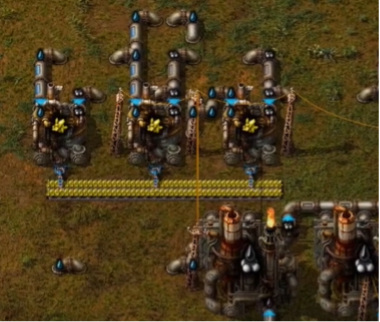
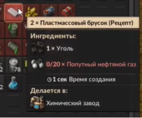
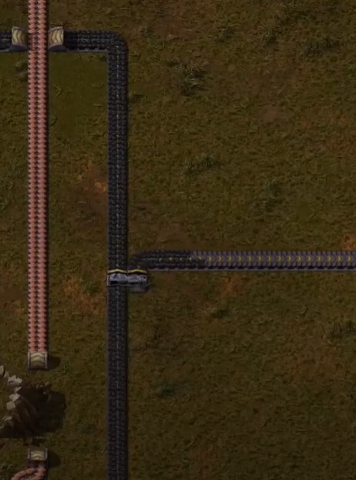
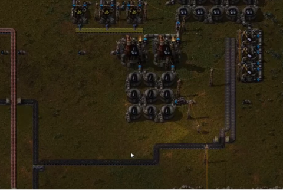
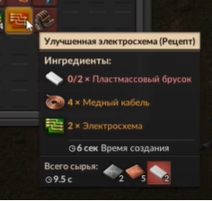

Производство пластика
В прошлый раз мы сделали переработку серы и вывели её на конвейер.

Теперь же будем делать пластик. Для его производства потребуется уголь, попутный нефтяной газ и химический завод.

Уголь мы можем взять с производства меди, так как его там достаточное количество.

Ставим 3 завода по производству пластика, подводим уголь и попутный нефтяной газ, и в итоге на конвейере получим пластик.

Чтобы пластик поступал сразу по обоим сторонам конвейера, поставим разделитель и заведём одну ветку обратно к другой, так как показано на картинке.

В дальнейшем он нам потребуется для создания улучшенных электросхем.
